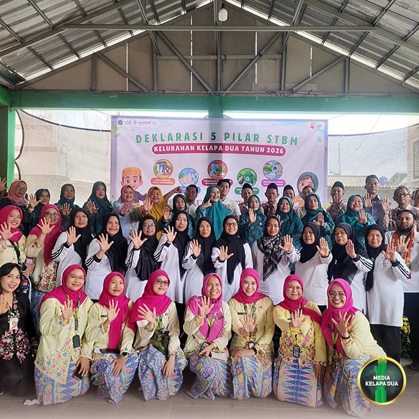

Berita Utama

Deklarasi STBM Kelurahan Kelapa Dua Perkuat Komitmen Wujudkan Lingkungan Sehat dan Bebas Stunting
Tanggal, 30 Oktober 2026
MediaKada | Kelurahan Kelapa Dua menggelar kegiatan Deklarasi Sanitasi Total Berbasis Masyarakat (STBM) sebagai bagian dari upaya mendukung Program Kota Sehat Administrasi Jakarta. Kegiatan tersebut berlangsung di Sekretariat RW 08 Kelurahan Kelapa Dua, Kecamatan Kebon Jeruk, Jakarta Barat, pada Jumat pagi (30/10).
Deklarasi Sanitasi Total Berbasis Masyarakat (STBM) merupakan pernyataan komitmen sekaligus wujud keberhasilan suatu wilayah dalam menerapkan prinsip-prinsip sanitasi sehat melalui pemberdayaan dan partisipasi aktif masyarakat. Program ini bertujuan untuk menurunkan angka kejadian diare dan penyakit berbasis lingkungan lainnya, memandirikan masyarakat dalam menjaga kebersihan lingkungan, serta membentuk budaya Perilaku Hidup Bersih dan Sehat (PHBS) yang berkelanjutan di tingkat keluarga.
Acara diawali dengan menyanyikan Lagu Indonesia Raya, dilanjutkan sambutan dari Lurah Kelapa Dua, Elfin Ridho Putra, Kepala Suku Dinas Kesehatan Kota Administrasi Jakarta Barat, dr. Sahruna, M.K.M, serta Wakil Wali Kota Administrasi Jakarta Barat, Ali Murtadho. Rangkaian kegiatan kemudian dilanjutkan dengan pembacaan Ikrar Deklarasi 5 Pilar STBM, penandatanganan Deklarasi STBM, serta ditutup dengan pembacaan doa oleh Ust. H. Doddy Syaiful Anwar.
Penandatanganan Deklarasi STBM dilakukan oleh sejumlah pejabat dan unsur terkait sebagai bentuk dukungan terhadap implementasi lima pilar sanitasi berbasis masyarakat. Di antaranya Wakil Wali Kota Administrasi Jakarta Barat Ali Murtadho, Asisten Administrasi dan Kesejahteraan Rakyat Kota Administrasi Jakarta Barat Depika Romadi, Kepala Suku Dinas Kesehatan Jakarta Barat dr. Sahruna, M.K.M, perwakilan Kementerian Kesehatan Muthia Fadhila, Dewan Kota Jakarta Barat Sa'id Al-Khudry, Lc., M.Ag, Kapolsek Kebon Jeruk AKP Darto Napitupulu, S.H., M.M., Plt. Camat Kebon Jeruk Pangestu Aji Swahdhanu, S.STP., M.A.P, serta Lurah Kelapa Dua Elfin Ridho Putra.
Pada sesi pembacaan ikrar, seluruh peserta dan tamu undangan mengikuti dengan penuh khidmat. Dalam ikrar tersebut, seluruh pihak menyatakan komitmen untuk menjadikan kesehatan sebagai kebutuhan sekaligus tanggung jawab bersama melalui penerapan Perilaku Hidup Bersih dan Sehat (PHBS) serta Gerakan Masyarakat Hidup Sehat (GERMAS). Upaya tersebut diharapkan mampu mencegah berbagai penyakit berbasis lingkungan sekaligus menekan angka stunting di masyarakat.
Selain itu, para peserta juga berkomitmen untuk terus meningkatkan derajat kesehatan masyarakat melalui penerapan lima pilar STBM, yaitu Stop Buang Air Besar Sembarangan (SBS), Cuci Tangan Pakai Sabun (CTPS), Pengelolaan Air Minum dan Makanan Rumah Tangga (PAMMRT), Pengamanan Sampah Rumah Tangga (PSRT), serta Pengamanan Air Limbah Domestik Rumah Tangga (PALDRT).
Dalam ikrar yang dibacakan bersama, seluruh peserta menyatakan keyakinan dan tekad untuk menjadi pelopor serta teladan dalam mewujudkan lingkungan yang bersih, sehat, dan berkelanjutan. Ikrar tersebut ditutup dengan doa dan harapan agar komitmen yang telah dibangun bersama dapat terus dijalankan dengan baik serta mendapat kemudahan dan bimbingan dari Tuhan Yang Maha Esa.
Kegiatan Deklarasi STBM turut dihadiri oleh Wakil Wali Kota Administrasi Jakarta Barat Ali Murtadho, Asisten Administrasi dan Kesejahteraan Rakyat Jakarta Barat Depika Romadi, Kepala Suku Dinas Kesehatan Jakarta Barat dr. Sahruna, M.K.M, perwakilan Kementerian Kesehatan Muthia Fadhila, perwakilan Dinas Kesehatan dr. R.A. Pramono, Ketua TP PKK Kota Administrasi Jakarta Barat Eka Ali Murtadho, Dewan Kota Jakarta Barat Sa'id Al-Khudry, Lc., M.Ag, Kapolsek Kebon Jeruk AKP Darto Napitupulu, S.H., M.M., Plt. Camat Kebon Jeruk Pangestu Aji Swahdhanu, S.STP., M.A.P, Kepala Puskesmas Kecamatan Kebon Jeruk dr. Linda Lidya, M.Epid, perwakilan TP PKK Kecamatan Kebon Jeruk, Gulkarmat Jakarta Barat, jajaran UKPD Kecamatan Kebon Jeruk, Ketua TP PKK Kelurahan Kelapa Dua beserta pengurus, para Ketua RW, LMK, FKDM, Ketua RT se-RW 08, Koordinator Dasawisma, serta Koordinator Jumantik.
Melalui deklarasi ini, Kelurahan Kelapa Dua menegaskan komitmennya untuk terus meningkatkan kualitas kesehatan masyarakat melalui penguatan perilaku hidup bersih dan sehat, pemberdayaan masyarakat, serta kolaborasi seluruh pemangku kepentingan dalam mewujudkan lingkungan yang sehat, nyaman, dan bebas dari penyakit berbasis lingkungan.
Usai kegiatan deklarasi, dilanjutkan peninjauan lapangan sekaligus memberikan pembinaan dalam rangka persiapan Lomba Kampung Bebas Jentik (KBJ) yang akan diikuti oleh RW 08 Kelurahan Kelapa Dua pada tingkat Provinsi DKI Jakarta.